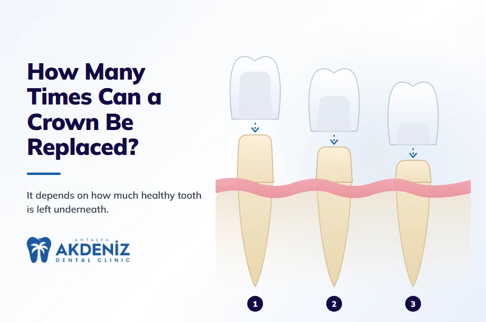

Nie ma ustalonej liczby wymian korony.
Decyduje o tym ząb pod spodem: ile zdrowej tkanki pozostało, jak mocny jest korzeń i czy nerw nie przeszedł już zbyt wiele. Niektóre zęby przyjmują nową koronę trzy lub cztery razy w ciągu życia i nadal dobrze służą. Inne nie są w stanie utrzymać kolejnej korony już po drugiej.
Gdy pacjent pyta, ile jeszcze koron zniesie ząb, szczera odpowiedź dentysty brzmi: to zależy od tego, co z niego zostało. Zdjęcie RTG, dokładne obejrzenie brzegów (miejsca, w którym korona styka się z zębem) i sprawdzenie zgryzu powiedzą dentyście znacznie więcej niż jakakolwiek ogólna reguła.
Co ogranicza liczbę wymian korony?
Utrata tkanki zęba przy każdej wymianie
Stara korona prawie nigdy nie odpada po prostu w całości. Dentysta ją rozcina, usuwa ukrytą pod nią próchnicę, a następnie ponownie kształtuje to, co zostało, tak aby nowa korona ściśle przylegała.
Każdy z tych etapów zabiera trochę zęba. Niewiele, może ułamek milimetra tu i ówdzie, ale szkliwo i zębina nie odrastają. Powtórz to trzy, cztery, pięć razy, a kikut staje się krótszy, cieńszy i słabszy.
Dlatego przy każdej wymianie priorytetem dentysty jest zachowanie jak największej części naturalnego zęba.
Wielokrotne prace protetyczne a ryzyko dla nerwu
Za każdym razem, gdy ząb jest opracowywany pod koronę, odczuwa to nerw w jego wnętrzu (miazga): ciepło podczas szlifowania, podrażnienie w trakcie zabiegu, powolny postęp próchnicy przy starym brzegu. Jeden raz zwykle nie stanowi problemu. Kilka razy na przestrzeni lat? Ryzyko, że nerw obumrze, rośnie i w końcu potrzebne jest leczenie kanałowe.
A ząb po leczeniu kanałowym staje się bardziej kruchy. Właśnie dlatego korona ma tak duże znaczenie. Badanie opublikowane w Journal of Prosthetic Dentistry (2025) objęło dane z 28 lat dokumentacji kliniki stomatologicznej i dotyczyło zębów po leczeniu kanałowym, które wymagały wielokrotnego ponownego leczenia: zęby z koronami dłużej utrzymywały się do momentu ekstrakcji niż zęby bez koron i wymagały po drodze znacznie mniej zabiegów (około 4 wobec około 7).
Krótko mówiąc, korony chronią zęby po rozległym leczeniu, ale każda wymiana odbywa się kosztem zęba.
Jaka jest średnia żywotność korony?
Typowa korona służy od 10 do 15 lat. Wiele z nich wytrzymuje znacznie dłużej.
Korony cyrkonowe
Cyrkon to najwytrzymalszy materiał na korony powszechnie stosowany przez dentystów. Cyrkon bardzo dobrze znosi duże siły żucia, dlatego jest pierwszym wyborem w przypadku zębów tylnych i osób zgrzytających zębami. Cyrkon monolityczny (lity) nie ma warstwy porcelany, która mogłaby odprysnąć – a to częsty słaby punkt starszych koron. Chcesz poznać szczegóły? Przeczytaj naszą stronę o koronach cyrkonowych.
Korony E-max
E-max (dwukrzemian litu) to materiał, który dentyści wybierają zwykle wtedy, gdy najważniejszy jest wygląd, czyli głównie w przypadku zębów przednich. Przepuszcza światło podobnie jak naturalne szkliwo, więc nie wygląda płasko ani kredowo. Jest wytrzymały, choć nie aż tak jak cyrkon; w przypadku zębów trzonowych osoby mocno zgrzytającej zębami często lepszy jest cyrkon. Więcej szczegółów na naszej stronie o e-max.
Korony porcelanowe na podbudowie metalowej
Korony porcelanowe na metalu (PFM) stosuje się od dziesięcioleci. Mogą służyć długo, ale z biegiem lat pojawiają się dwa problemy: porcelana może odpryskiwać od metalu, a gdy dziąsła się cofają, przy linii dziąseł zaczyna prześwitywać ciemny metalowy brzeg. Ta szara linia to jeden z najczęstszych powodów, dla których pacjenci proszą o wymianę koron.
Co dzieje się z koronami po 10 latach?
Zwykle nic nagłego; korony starzeją się przez stopniowe zużycie.
Uszczelnienie cementem na brzegu może nieco się osłabić. Dziąsła mogą się cofnąć i odsłonić powierzchnię korzenia tuż pod koroną. Na powierzchni pojawiają się mikrorysy; porcelana może stracić nieco połysku. A jeśli przy brzegu powstanie szczelina, dostają się tam bakterie.
Dziesięć lat to jednak nie data ważności. Wiele koron po 10, 15, a nawet 20 latach nadal dobrze wygląda i funkcjonuje. Regularne wizyty kontrolne służą temu, by wychwycić te, z którymi jest inaczej.
Dlaczego korony wymagają wymiany?
Najczęstsze powody, z którymi dentyści spotykają się w praktyce:
- Próchnica przy brzegu (powód numer jeden)
- Odprysk lub pęknięcie porcelany
- Korona, która ciągle się odkleja
- Cofające się dziąsła odsłaniające ciemny metalowy brzeg lub powierzchnię korzenia
- Zgrzytanie lub zaciskanie zębów, które ściera koronę
- Zgryz, który wydaje się nieprawidłowy, czasem po innych pracach stomatologicznych w pobliżu
- Wygląd: korona nie pasuje już do pozostałych zębów, np. po wybielaniu
Czy koronę metalową można wymienić na cyrkonową?
Tak – to jedna z najczęstszych wymian koron wykonywanych przez dentystów.
Pod starymi koronami PFM często jest już przygotowana spora przestrzeń, więc przejście na cyrkon lub e-max często wymaga niewielkiego dodatkowego szlifowania albo nie wymaga go wcale. Znika szara linia przy dziąśle, znika metal, a zyskujesz koronę, która wygląda znacznie bardziej jak prawdziwy ząb.
Czy warto to zrobić, jeśli stara korona nie boli? Jeśli brzeg jest szczelny i nie ma próchnicy, nie ma pośpiechu z medycznego punktu widzenia. Nieszczelność na brzegu, próchnica lub dziąsła, które mocno się cofnęły? Wtedy wczesna wymiana chroni ząb (i pozostawia go więcej na przyszłość).
Kiedy korony nie można już wymienić?
Gdy po prostu nie zostało wystarczająco dużo zęba, by ją utrzymać. Taka jest szczera odpowiedź. Ale nawet gdy z zęba zostało niewiele, przed ekstrakcją nadal można spróbować innych rozwiązań.
Wkład koronowo-korzeniowy
Jeśli ząb był leczony kanałowo, w korzeniu można osadzić niewielki wkład, a wokół niego odbudować rdzeń. Taki odbudowany kikut utrzymuje następnie nową koronę. Nie wzmacnia to zęba w ścisłym sensie, ale daje koronie oparcie.
Kiedy ekstrakcja i implant zębowy są lepszym rozwiązaniem
Czasem jednak ratowanie zęba nie jest już najlepszym wyborem. Jeśli korzeń jest pęknięty, próchnica sięga zbyt głęboko lub ząb przeszedł zbyt wiele zabiegów, ekstrakcja i implant zębowy mogą być bardziej przewidywalnym rozwiązaniem długoterminowym.
Czy koronę na implancie można wymienić?
Tak – i tu implanty mają prawdziwą przewagę.
Pod koroną na implancie nie ma naturalnego zęba, więc jej wymiana niczego nie uszczupla. Koronę przykręcaną do implantu można po prostu odkręcić, wymienić i przykręcić z powrotem. Korony cementowane na implantach wymagają nieco więcej pracy przy zdejmowaniu, ale sam implant pozostaje na miejscu.
Zasadniczo koronę na implancie można wymieniać tyle razy, ile potrzeba. Implant jest długoterminowym fundamentem; korona na nim to element zaprojektowany do odnawiania.
Trzecia wymiana korony: dlaczego liczą się umiejętności dentysty
Pierwsze założenie korony to ta prostsza część. Przy trzecim jest mniej zęba, mniejszy margines błędu, a często też nerw, który przeszedł już bardzo wiele.
Właśnie wtedy widać prawdziwe umiejętności. Staranny dentysta zdejmuje starą koronę, nie naruszając zęba pod spodem; usuwa próchnicę, nie zabierając zdrowej zębiny „na wszelki wypadek”; precyzyjnie wyznacza nowy brzeg, aby płytka nazębna nie mogła się tam ukryć. Jeśli te szczegóły zostaną dopracowane, nowa korona ma realną szansę posłużyć kolejne 15 lat. Jeśli nie, może wymagać ponownej wymiany w ciągu kilku lat.
Dlatego zadawaj pytania. Ile zęba zostało? Jaki jest plan, jeśli to za mało? Dobry dentysta chętnie pokaże zdjęcie RTG i wszystko wyjaśni.
Jak przedłużyć żywotność nowej korony
- Czyść brzeg, a nie tylko koronę. Kieruj włosie w stronę linii dziąseł; to tam zwykle zaczynają się kłopoty.
- Codziennie używaj nici lub szczoteczek międzyzębowych. Korony zatrzymują płytkę między zębami tak samo jak naturalne zęby.
- Zgrzytasz zębami w nocy? Noś szynę nocną. To prawdopodobnie najlepsza rzecz, jaką możesz zrobić dla żywotności korony.
- Nie używaj zębów jako narzędzi. Nie otwieraj nimi butelek ani opakowań i nie gryź lodu.
- Chodź na wizyty kontrolne. Zdjęcia RTG wykrywają próchnicę przy brzegu na długo przed tym, zanim ją poczujesz.
Wymiana koron w Antalyi w Turcji
Wielu pacjentów przychodzi do Akdeniz Dental Clinic z koronami wykonanymi przed laty: z klasyczną szarą linią przy dziąśle, odpryśniętym zębem przednim lub koroną, która ciągle wypada. Większość chce dwóch rzeczy: naturalnego wyglądu i efektu, który nie będzie wymagał poprawek za kilka lat.
Podejście kliniki zaczyna się od rzetelnej oceny każdego zęba. Jeśli korona nie wymaga wymiany, dentyści mówią to wprost. Jeśli ząb nie zniesie kolejnej korony, również to mówią i wyjaśniają dostępne opcje.
Dlaczego nasze własne laboratorium protetyczne ma znaczenie
Korony w Akdeniz Dental Clinic powstają we własnym laboratorium kliniki, Akdeniz Dental Lab. Oznacza to, że dentysta i technik wykonujący koronę pracują ramię w ramię: sprawdzanie odcienia, korekty dopasowania, drobne poprawki kształtu. Wszystko to odbywa się pod jednym dachem, zamiast przesyłania prac tam i z powrotem do zewnętrznego laboratorium.
Przy wymianie korony, gdy brzegi są ciaśniejsze, a margines błędu mniejszy, taka bliska współpraca naprawdę się liczy.
Myślisz o wymianie starej korony? Skontaktuj się z Akdeniz Dental Clinic i prześlij zdjęcia RTG lub fotografie do oceny.
Najczęściej zadawane pytania o wymianę koron
Czy ząb można pokryć koroną dwa razy?
Tak. Większość zębów z koronami można ponownie pokryć koroną, często więcej niż dwa razy, o ile zostało wystarczająco dużo zdrowego zęba, by utrzymać nową koronę.
Czy wymiana korony boli?
Nie podczas zabiegu – zapewnia to znieczulenie miejscowe. Pewna nadwrażliwość przez kilka dni po zabiegu jest normalna i zwykle ustępuje samoistnie.
Jak często należy wymieniać korony?
Tylko wtedy, gdy jest ku temu powód. Nie ma ustalonego harmonogramu; korona, która jest szczelna, wolna od próchnicy i wygodna, może pozostać na miejscu. Zwykła żywotność mieści się w przedziale od 10 do 15 lat.
Czy warto wymieniać koronę, która nie boli?
Czasami. Próchnica pod koroną często nie boli, dopóki nie jest zaawansowana, więc jeśli dentysta zauważy na zdjęciu RTG nieszczelność lub próchnicę, wczesna wymiana zwykle pozwala ocalić więcej zęba.